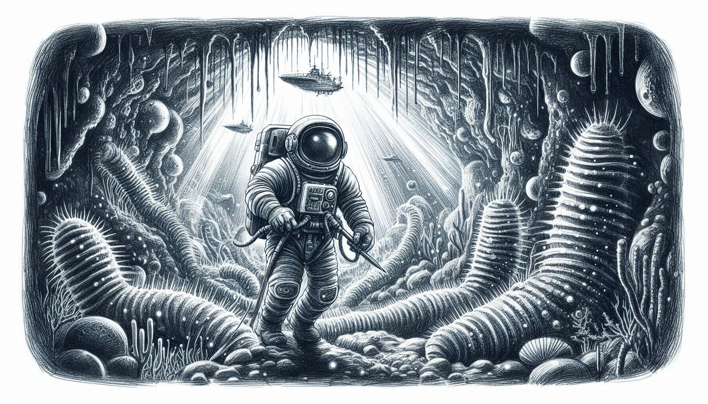

This is the home page of the submission of Team HSpace (Individual/Singapore) for the 2024 International NASA Space Apps Challenge
Challenge: Beyond Sunlight: An Aquatic Chemosynthetic World
Team's Challenge Submission Page: Team HSpace
Explore Tenebris Using The Above Navigation Panel
- Briefing: What is Tenebris?
- Geology: What does Tenebris look like?
- Ecosystem: What is the foundation of life and energy on Tenebris?
- Flora & Fauna: What forms of life survive and thrive in the extreme conditions of Tenebris? How have conditions on Tenebris shaped evolution?
- Exploration: What opportunities and challenges await human exploration of Tenebris?
- Debriefing: What insights can we gain from this study of Tenebris?

Image is generated using Microsoft Designer